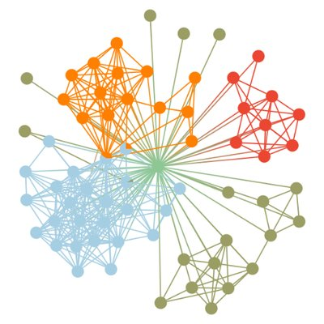

Assistant Professor · Department of Psychology, University of Limerick
Honorary Research Fellow, School of Health & Wellbeing, University of Glasgow
I am a quantitative social scientist with two PhDs — in Psychology (University of Zagreb, 2014) and Network Science (Central European University, 2023). My research sits at the intersection of computational social science, social network analysis, and psychology, with a focus on peer influence, mental health, and the structure of complex social systems.
My research identity is most aligned with computational social science and the broader frameworks of complexity research and analytical sociology. I am an interdisciplinary researcher, spanning computational social sciences, network science, psychology, sociology, and public health. My current work focuses on social influence, peer networks, and mental health, applying advanced computational and quantitative methods to study how complex social systems shape human behaviour and wellbeing.
Google Scholar citations: 454 · h-index: 10 (April 2026)
Over 20 conference presentations in the last five years — full list available in the CV.
Download the full CV and doctoral theses below.
Over the years, my research has taken me from Croatia to Australia, and then back across Europe, and now I am in the West of Ireland. Below are some of the places that shaped my academic journey.